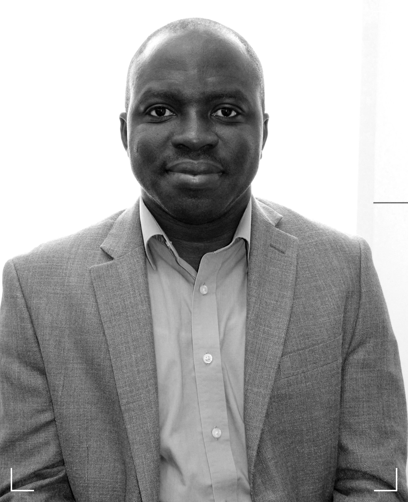

Albert K. Boaitey
Senior Lecturer, Agricultural & Resource Economics
Massey University, New Zealand

About
I am an agricultural and resource economist working at the intersection of livestock systems, sustainability, animal welfare, and food systems policy. My work examines how producers, consumers, and institutions respond to environmental and ethical challenges in agriculture.
Research Areas
Sustainable Livestock Systems
Genomic selection, feed efficiency, environmental impacts, carbon offset design.
Animal Welfare & Society
Public attitudes, ethical food choice, social desirability bias, dairy welfare.
Food Systems & Policy
Food technology concerns, sustainability incentives, dairy & plant-based markets.
Leadership
I co-lead the Africa Mind Mine Initiative (AMMI), a pan‑African platform advancing foresight, collective intelligence, and research-driven development.
Learn more →Selected Publications
- Boaitey, A. (2025). Too anxious to eat?
- Boaitey, A., Clark, B., & Tiwasing, P. (2025). Sustainability considerations…